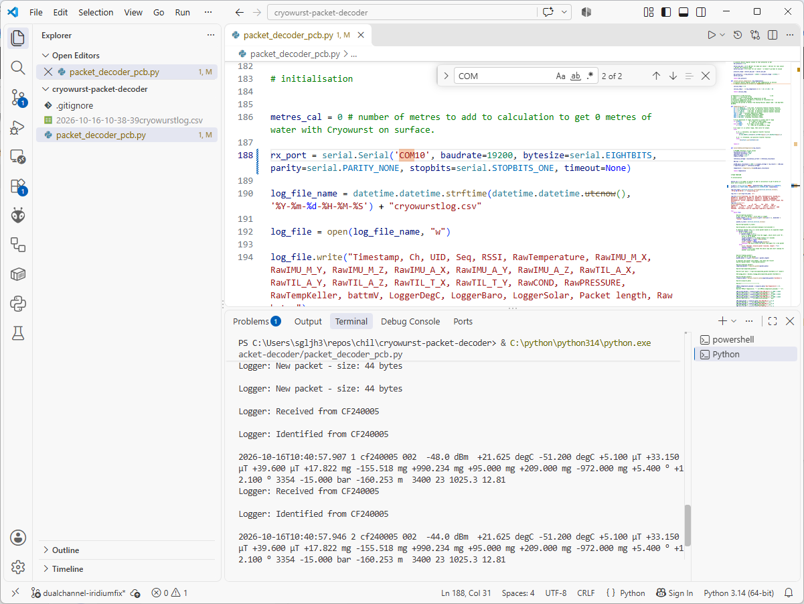
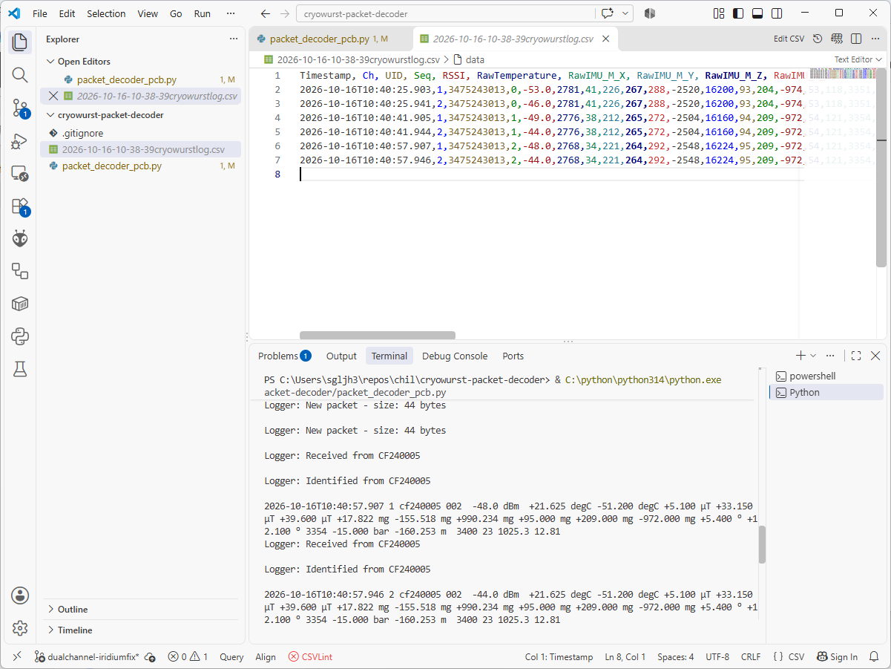

Cryowurst packet decoder (2023)#
The Cryowurst packet decoder is a Python-based decoder for packets sent over the USB (serial) link between a 2023 Cryowurst Datalogger and a PC. It has the following functionality:
Logging to
.csvfile of packets received over the USB (serial) link.Console display of interpreted data values.
Real-time display of logger environmental data (temperature, pressure, battery voltage).
This setion describes how to install Cryowurst packet decoder and run it on your PC to decode packets from 2023 versions of the Cryowurst.
Setup#
Important
These instructions assume you have already setup the CHIL development environment and have installed Python and Git.
Download#
The Cryowurst packet decoder is available from GitHub `https://github.com/mrpj100/cryowurst-packet-decoder/tree/DualChannel-2024-withKellerandIMUaccel`__ and can be downloaded as a .zip archive, or by cloning it to a folder on your machine below:
cd /path/to/install/to/
git clone https://github.com/mrpj100/cryowurst-packet-decoder/
cd cryowurst-packet-decoder
git checkout DualChannel-2024-withKellerAndIMUaccel
It is important to make sure you download or are checked out on the DualChannel-2024-withKellerAndIMUaccel branch which has functionality for the dual channel receiver and full sensor display.
Configure Python environment#
The Cryowurst packet decoder requires the pyserial package which can be installed to your Python environment using the command below (internet connection required).
python -m pip install pyserial
Once this is installed, you are ready to run the Cryowurst packet decoder.
Operation#
Before running the packet decoder, it is necessary to make sure it is properly configured which is described in the steps below. Any text editor can be used to update the packet decoder propgram (packet_decoder_pcb.py), but an editor such as Visual Studio Code with Python and terminal support make the process of using the program more succinct.
Update the serial port#
To ensure that the packet decoder will connect to the correct port, you must Update the COM port used by serial.Serial on Line 188 to match that associated with the datalogger.
rx_port = serial.Serial('COM16', ...
# change this value ^^^^^
Tip
If you aren’t sure which COM port is associated with the datalogger, open the Device Manager (Windows Key + R) and run devmgmt.msc.
Find the Ports (COM & LPT) section, remove the USB cable to the datalogger and replace it to identify which port is used.
If you do not update the value of the COM port above, the software will:
crash if there is no port with the ID assigned to the
serial.Serialobject.run but without recording any packets if there is another device connected to the PC which is assigned to the ID provided.
Warning
If there is other software already connected to the specified COM port, the software will crash, raising a PermissionError exception.
If you are programming the datalogger using the Arduino IDE, make sure the Serial Monitor is closed once you are finished to avoid this happening.
Set the Keller sensor pressure#
The variable keller_max_bar (Line 104) relates to the full-scale pressure used to convert the raw pressure values transmitted by the Cryowurst to a physical value in bar.
Warning
Since the value of keller_max_bar is used to convert the Keller pressure sensor value for all sensors, it may output to erroneous decoded pressure values if there are multiple types of pressure sensor in use.
Set the water head offset#
The metres_cal variable (Line 186) is used zero any offset between the Cryowurst and datalogger pressure sensors at the surface to remove this error from interpreted values of metres head of water (mH20).
Prior to deploying any Cryowurst, set the value of
metres_cal = 0.0.Start the Cryowurst sensors and wait for a packet to be received.
After several deployment packets, stop the packet decoder.
Set the value of
metres_calto -1 multiplied by the average value ofmH20received from Cryowurst sensors on the surface.Restart the packet decoder with the new value of
metres_cal.
Running the packet decoder#
Once you have updated the configuration variables defined above run the packet decoder in a terminal window with the following commands, replacing /path/to/cryowurst-packet-decoder with the path to the program on your filesystem.
cd /path/to/cryowurst-packet-decoder
python packet_decoder_pcb.py
Hint
If you are using Visual Studio Code, you can run the packet decoder by opening packet_decoder_pcb.py and pressing the Run button (triangle) in the top right.

Fig. 84 Running the 2023 cryowurst-packet-decoder and receiving a Cryowurst packet using Visual Studio Code.#
For each Cryowurst packet that the packet decoder receives, it logs it to a timestamped file with the naming format YYYY-mm-DD-HH-MM-SScryowurstlog.csv. A new file is created every time the program is started and example contents are shown below in Figure 85.

Fig. 85 An example _cryowurstlog.csv file that records the logged packets to the local filesystem.#
When you are finished with the packet decoder, you can end the program by pressing CTRL + C in the terminal window.